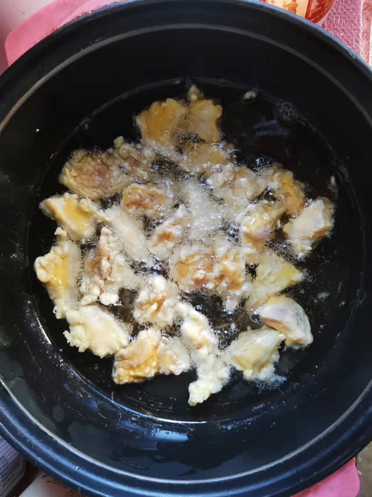
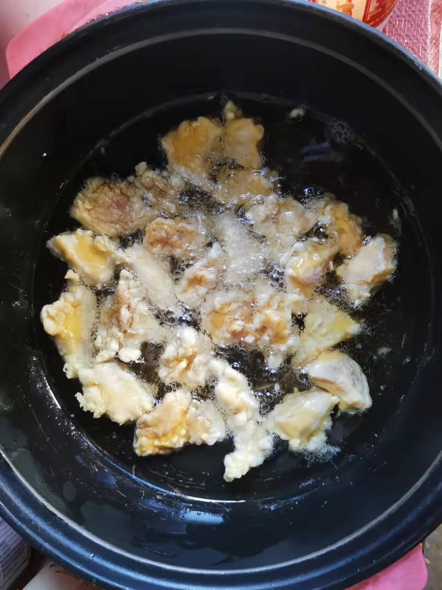
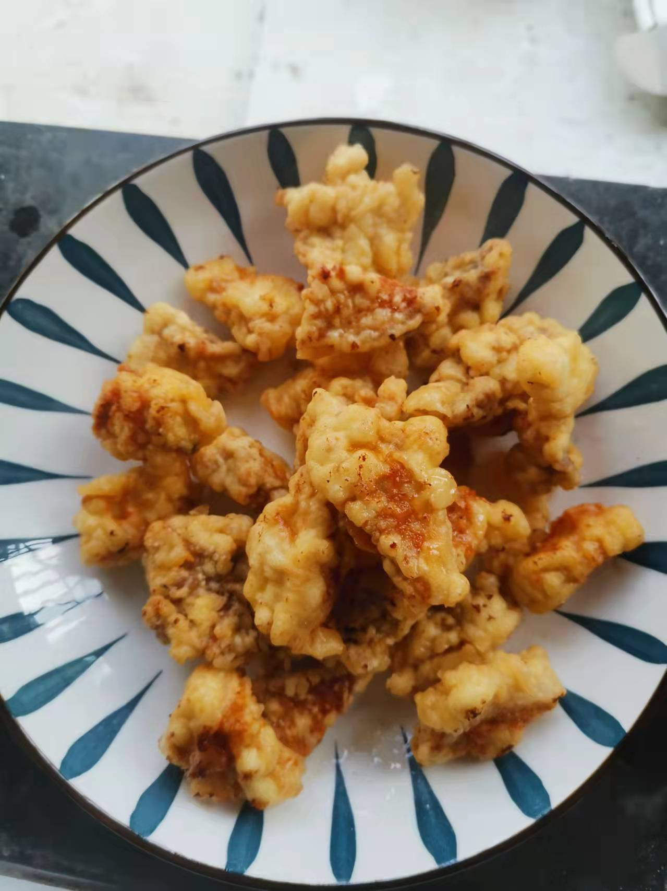
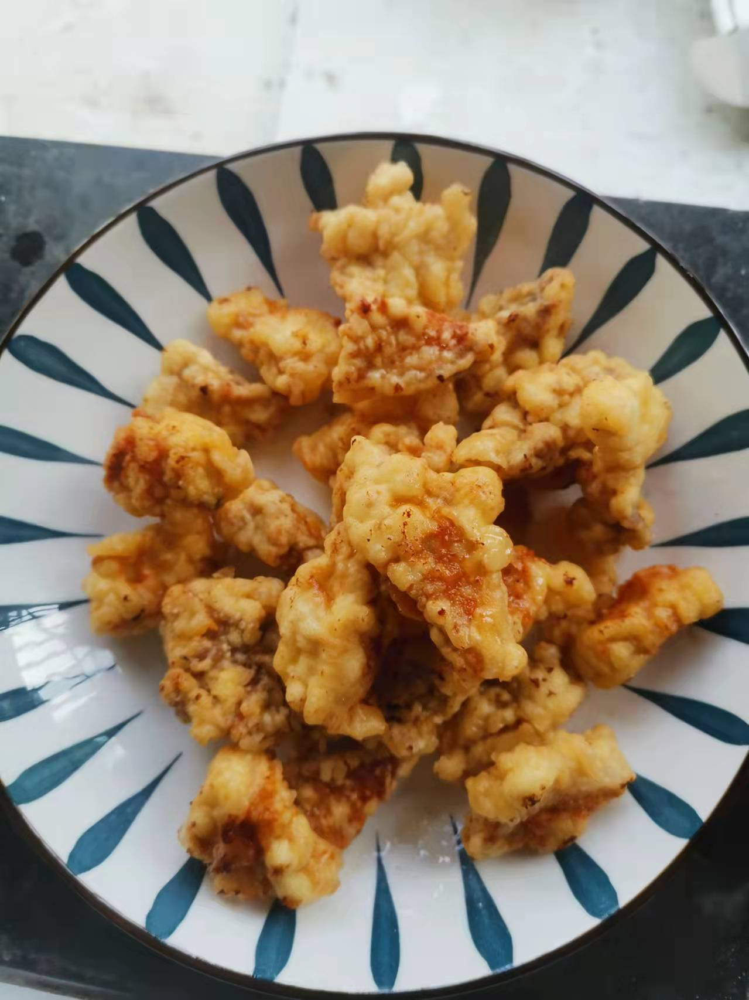
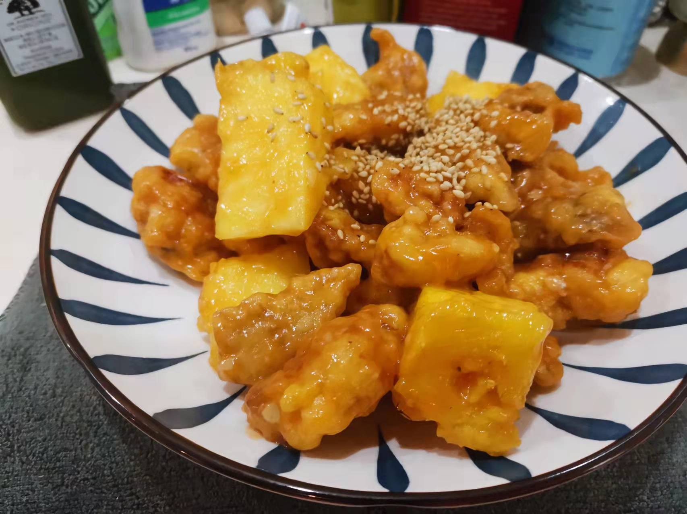
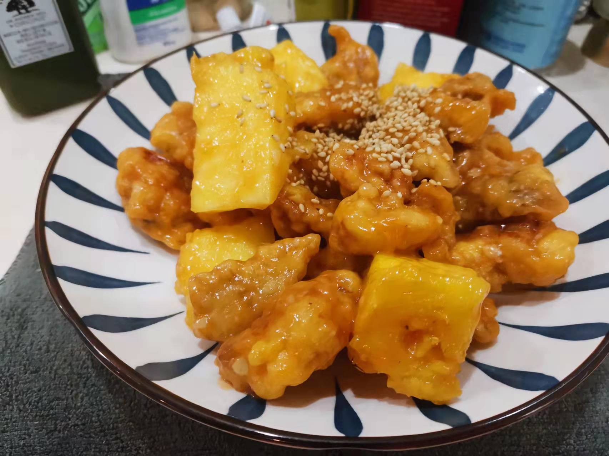

荔枝肉的做法
荔枝肉独具闽菜特点，味道酸甜可口。是福州地区比较常见的一道菜肴
预估烹饪难度：★★★★
必备原料和工具
- 瘦肉
- 凤梨
- 鸡蛋
- 食用油
- 白砂糖
- 淀粉
- 生抽
- 鸡精
- 姜末
- 芝麻
- 番茄酱
- 香醋
计算
每份：
- 鲜香菇 2 朵
- 蟹味菇 30 g
- 瘦肉 150 g
- 凤梨 100 g
- 鸡蛋 1 个
- 食用油 500 ml
- 白砂糖 5 g
- 淀粉 100 g
- 生抽 5 ml
- 鸡精 5 g
- 姜末 5 g
- 芝麻 2 g
- 番茄酱 20 g
- 香醋 2 ml
操作
- 瘦肉切块（每块 2-3 cm ），放入大碗中，加入鸡蛋 1 个 、生粉 50 g 、生抽 3 ml 、鸡精 2 g
- 充分搅拌,直至生粉包裹住瘦肉块（太稀则继续加生粉，太干则加水），然后加入 5 ml 油，在充分搅拌后备用
- 在准备一个碗，加入番茄酱、鸡精 3 g 、生抽 2 ml 、姜末、白砂糖、生粉 10 g 、凉水 200 ml ,充分搅拌后备用
- 切一个凤梨, 准备 6 个 （每个 1.5-2 cm）凤梨块
- 起锅烧油，倒入 500 ml 油，一直烧油直到听到油炸声
- 将瘦肉一个一个放入锅中（切记不可以整碗倒入），保证每个肉不要粘在一起
- 全部放入瘦肉后，每 30 S 用勺子来回两面翻转瘦肉块，直至瘦肉块表面金黄
- 取出瘦肉，一分钟后倒入油锅中继续炸，直至瘦肉块表面出现焦黄后，取出放入大碗备用
- 起锅，倒入汤汁，30 S 后倒入瘦肉块、凤梨块，充分翻炒后 出锅
- 摆上芝麻

 
  
  

附加内容
- 更多情况下，福州当地会选用马蹄（解腻）和马铃薯（洗油），因为疫情期间买不到，所以选用了凤梨
- 闽菜以甜为主，如果吃不惯的可以放弃白糖
- 可以通过勺子敲打瘦肉块，听到声响来判断是否炸透瘦肉
如果您遵循本指南的制作流程而发现有问题或可以改进的流程，请提出 Issue 或 Pull request 。